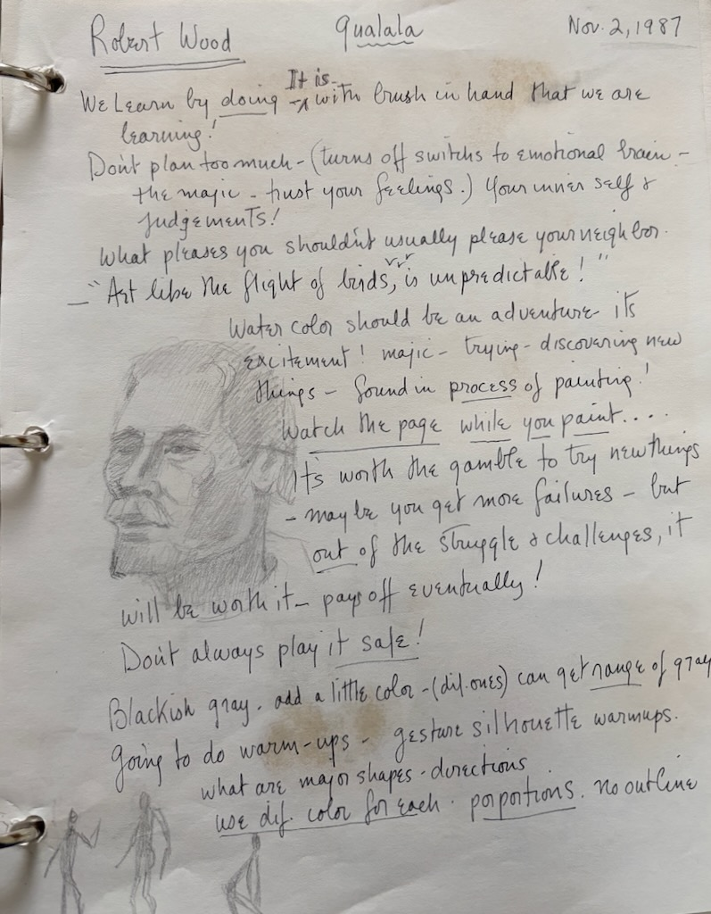
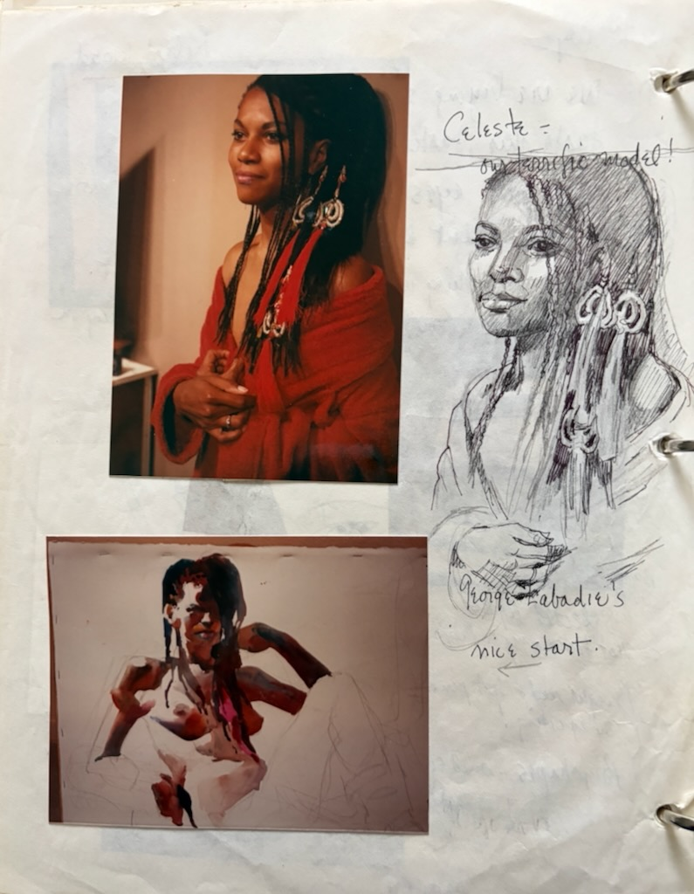
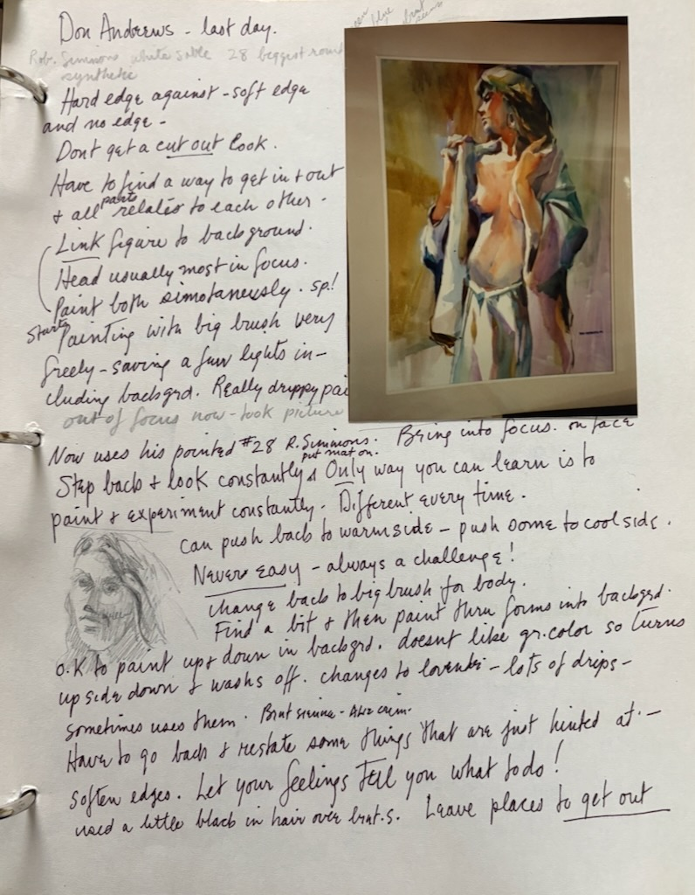
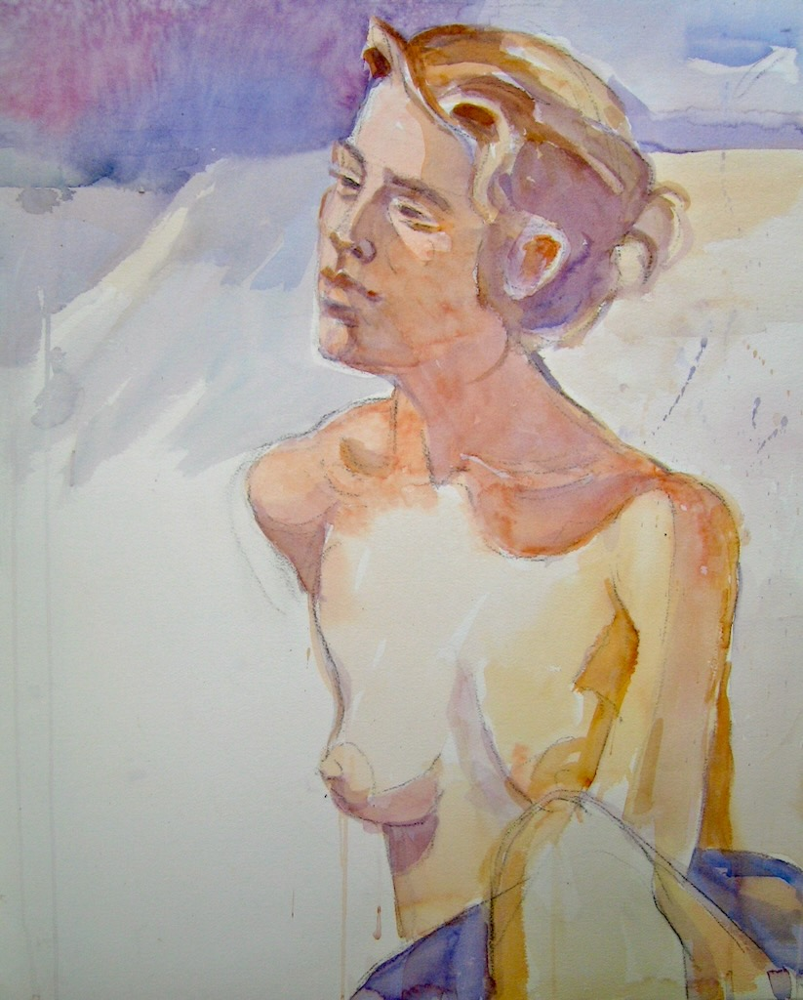

1987 Art Journal
- Artist: Patricia Ford Crass (American, 1923–2024)
- Date:1987-1988
- Medium: Watercolor and ink on paper (bound sketchbook journal)
- Subject: Studies from life, landscapes, and workshop exercises
- Context: Created during a period of intensive Bay Area study, including watercolor live-model painting classes with Charles Reid and Robert E. Wood in Gualala, southern Mendocino County, California on November 2, 1987
- On June 27, 1988, Pat studied nude figure painting with Don Andrews at the Asilomar in Pacific Grove, California
- Collection: Family private collection
Journal & Artistic Notes
Throughout the 1980s, Patricia Ford Crass kept illustrated art journals filled with on-location watercolor studies, sketches, and handwritten reflections on composition and technique. Created in 1987—the same year she studied watercolor figure painting with Charles Reid, Robert E. Wood, and other artists—this journal remains in the family's private collection.
Gallery



